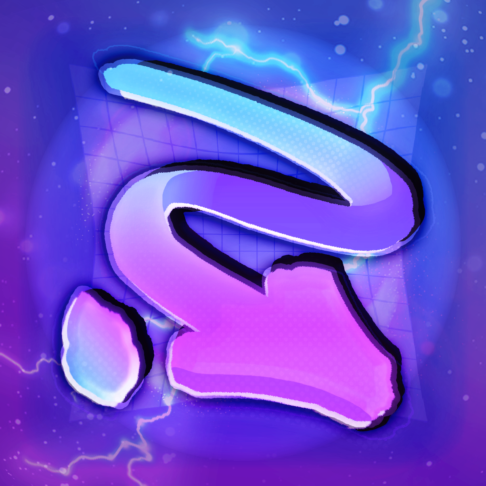
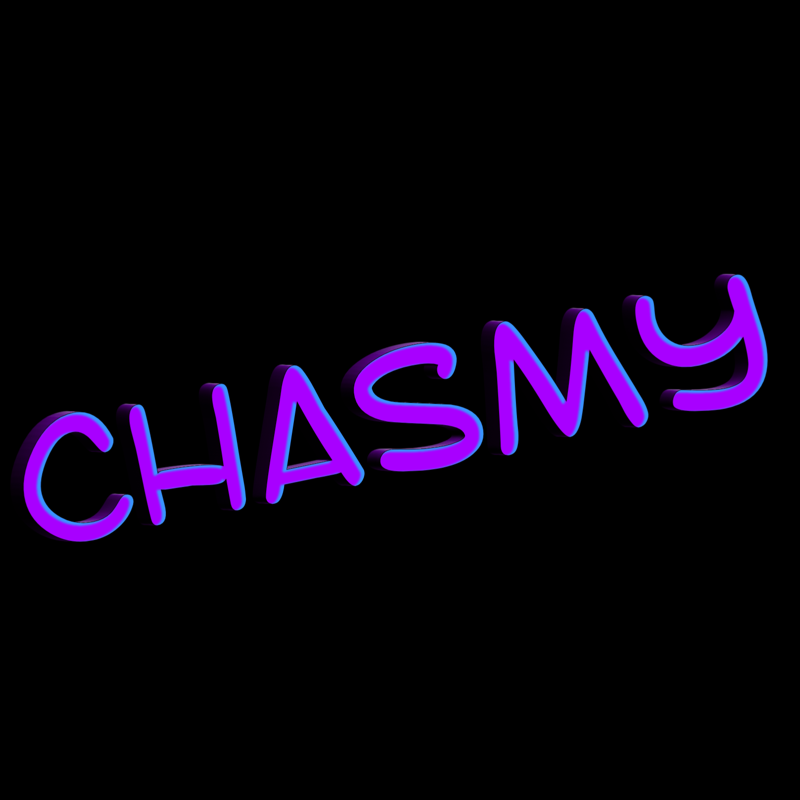

WhatsDown
Creator Game & Graphic Designer Programmer
My Little Pony enters the Lethal Company universe as an expansion pack to the original game! The ponies are tasked by Princess Luna to oversee some of the long abandoned moons and collect their forgotten resources, while learning of and avoiding the various creatures hidden inside.
My Little Company is a modded expansion for Lethal Company designed to integrate elements of the My Little Pony universe directly into company operations!
Humanoid employees (and potentially compatible creatures in the future) are replaced with fully animated ponies, designed and styled to fit naturally within the game. Employees may customize their appearance, animations, equipment behavior, and numerous other settings entirely in-game.
My Little Company is also designed with other mods in mind, allowing it to be included and played alongside your usual Company-approved modpacks. Mods which rely on custom humanoid animations will not display on pony employees, however.
// Please note that the Company accepts zero responsibility for friendship-related incidents. It is at the employees' discretion to work together responsibly.
Unlike the original Company experience, My Little Company features its own story to properly ground the ponies within this strange universe.
Years ago, before Princess Luna was first banished, she and Celestia funded an effort to explore forgotten moons throughout space. These expeditions were primarily led by Luna, with ponies across Equestria contributing funds in hopes of discovering resources and minerals that couldn't be found back home. Ships were constructed for long distance space travel, and the expeditions initially proved relatively successful.
However, following Luna's banishment, along with growing fears from employees about strange creatures inhabiting the moons, Celestia made the decision to shut the program down. The explored moons were abandoned, leaving behind equipment and materials from the expeditions.
Years later, after Princess Luna's return and reformation, she and Celestia decided it was finally time to revisit the program. Knowing the adventurous spirit of the Mane Six, Luna arranged for them to travel across the cosmos and return to the abandoned moons.
Their task is to recover scrap and equipment left behind by previous employees, gather any valuable resources or minerals they discover, and document the creatures now inhabiting the moons. This research is especially important if the expeditions are ever opened to the public again. The princesses need to know exactly what future employees may be dealing with...
Employees may operate as a generic fully suited Company pony, or select from the Mane Six, with additional ponies subject for future deployment.
Non-generic ponies can be equipped with the Company's exclusive employee bodysuit, or permitted to work with just their standard/required harness, saddle, and pouch.
Equipment has been adapted accordingly, so depending on the item, ponies can carry Company property using their:
// The company is additionally not responsible for any incidents relating to usage of magic. For safety reasons, ponies capable of magic can opt-out of such through configurations.
Every playable pony includes unique animations and sounds intended to make them feel like more than a simple model replacement. Many animations can also be individually reassigned between ponies.
Want Twilight Sparkle to bounce around like Pinkie Pie? Approved!
Want one pony to trot while another uses a calmer walk? Approved!
Want to completely disregard their usual personality and select animations unnatural to them? The Company won't bat an eye, provided you continue collecting scrap.
Walking, jumping, and other supported actions can be customized on a per-pony basis, allowing each employee to behave exactly how you want to.
My Little Company includes a wide range of settings for changing how much, or how little, the mod affects the original Lethal Company experience.
Employees may configure things such as camera visuals/behavior, pony presentation, lighting, animations, and other visual or gameplay preferences directly from within the game.
A preview system is also available, allowing employees to inspect their currently selected pony and customization before beginning operations.
Prefer the original game's presentation? You can keep things relatively close to vanilla. Want the experience to feel like you're seeing directly from your pony's point of view? You can do that too!
Company operations frequently result in employee injury, dismemberment, crushing, consumption, explosion, electrocution, and other unfortunate casualties in workforce productivity.
Employees who would prefer a friendlier presentation may disable graphic pony visuals, including blood and other gruesome, discomforting death effects. With these settings enabled, neutralized ponies can instead appear simply knocked out!
My Little Company is still a work in progress, as such it has not released yet. Once it releases, plans are to add more ponies, customization options, polishing, additional core features to spice up gameplay, and respond to additional feedback suggested by the community.
So what're you waiting for? Grab some friends (or join the community if you don't have any), choose your pony, prepare your equipment, and get to work. That quota is still due, and don't forget what's on the line... You know you need to satisfy the princess.

Creator Game & Graphic Designer Programmer

Game Designer Modeler
Lethal Company
My Little Pony
ponysfm.com